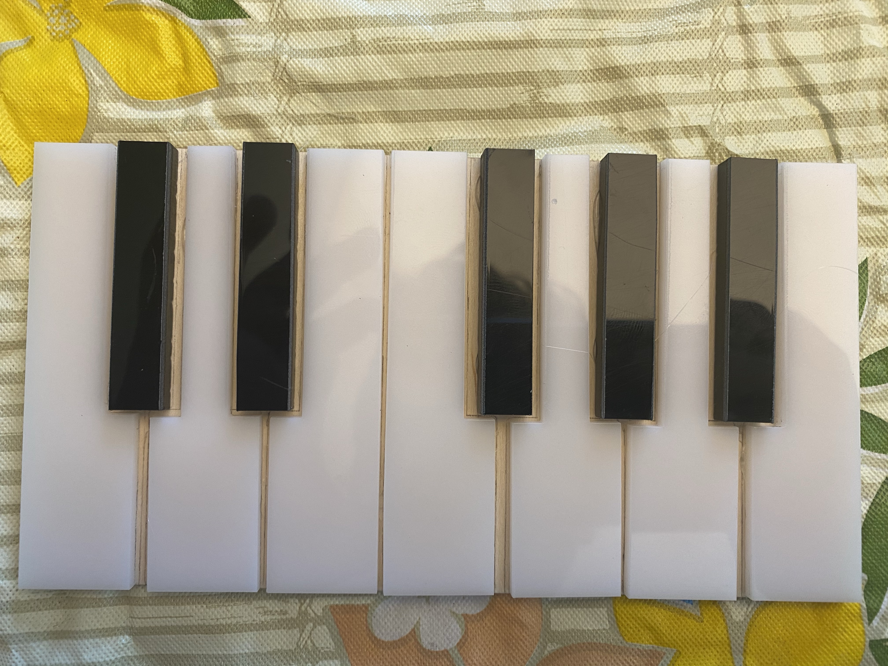
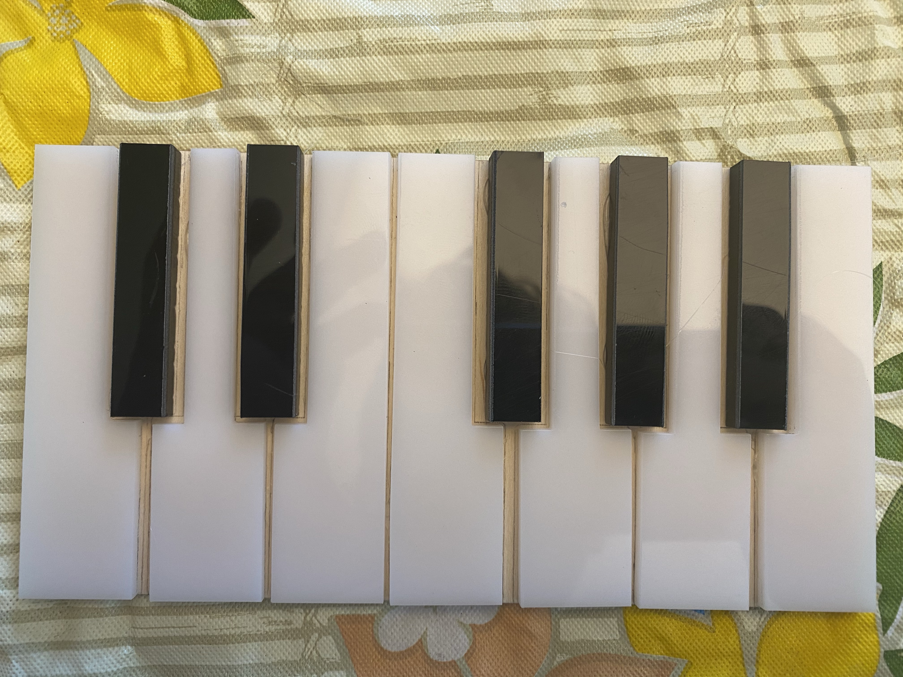

Final Project: Mini Piano
Why I Chose This Project:
Not only do I love music, but I've played piano ever since I was five years old. It's one of my favorite hobbies. So when I was thinking of ideas for my final project, a piano was one of the first things I brainstormed. I talked with Nathan, Victoria, and Rob, and I was thrilled when they all told me my idea was plausible. I originally wanted to just have the keys press down on some buttons, but I soon realized that would be too tedious and not really display how much I've learned throughout this course. So I decided to use copper tape to sense touch, which was a significantly better idea. In the end, I'm really glad about how well it turned out. But in the planning phase, I had no idea how much work this piano would really require.
How It Works:
Designing the Components:
The first part of the process was to design the piano's components in Fusion 360. Below is information about how I designed each component.
The Keys:
The first thing I did was find this set of piano keys on Thingiverse. I originally thought it would be best to 3D print the full models of my keys, but after an initial design, it turned out that the print would take over 18 hours. After talking to Nathan and Victoria, we decided it would be best to laser cut them instead. That's where my new designs began. I took the original key design from Thingiverse and retraced it to give me more design freedom. This was a necessary step since I imported the keys as a mesh body, which was extrememly difficult to edit, plus it wouldn't work for laser cutting. Once I had the keys traced, I was ready to export the design to be laser cut. Here's how the final design turned out.
However, I needed to split up the black keys and white keys for laser cutting, as they would be cut in different colors. While designing the keys, I had made the white keys their own sketch and the black keys their own sketch. From there, I exported each as a .dxf file to prepare them for laser cutting. Here is the .dxf files for the piano keys:
- White keys DXF: White Keys
- Black keys DXF: Black Keys
With the keys done, it was time to move onto designing my next component.
The Box:
I knew that I would need a box to fit all of my wires, the metro, the buzzer, and the buttons. During one of our class meetings, someone mentioned using a website to automatically create a box that came ready to be laser cut. I inquired about this and Nathan directed me to Makercase, where I input the dimensions for my box. Since my piano keys totaled 165 mm in length and my Metro microcontroller was about 54 mm wide, I inputted the dimensions for my box as 165 mm x 25.5 mm x 62 mm. Once that was finalized, I downloaded it as a .svg and inserted it into Fusion 360. At this point, I had to add some additional things to the box. On the front face, I added twelve 1.5 mm holes for each piece of copper tape (1 piece of tape per key). And on the top face, I added a circular hole in the middle for the buzzer, and two square holes on either side of the buzzer for the buttons. Once that was completed, the design was finished. Here's how the final design looked:
At this point, I was ready to laser cut the box. I exported it as a .dxf and sent it over to the instructors. Here is the .dxf file for the box:
- Box DXF: Box
Now that the box was finished, I moved onto the next component of my project.
The Microcontroller Holder Pins:
I remembered from watching the arduino enclosure tutorial for homework one class that it's better to not let your microcontroller touch the ground. However, since I don't know the exact dimensions of where the holes are on the metro, I decided it would be best to 3D print the pins and attach the via hot glue later. I first measured the diameter of the metro's holes, which was 3.2 mm. Following along with the tutorial, I first sketched a circle that was 2.8 mm (again, allowing for some wiggle room). I then extruded that 20 mm. Next, I made another sketch, this time with a circle that was 3.2 mm, the dimension of the holes in the microcontroller. This was so that I could fit it through the smaller cylinder and have it rest on this larger one. I then extruded that 4 mm, per the tutorial's suggestion. Once the whole thing was extruded, I chamfered the top of the pins to allow the microcontroller to easily slide on. Once I finished these pins, I added in hollow cylinders (that I have resting on top of the metro) for the other pins to slide into, preventing the microcontroller from falling out. Here's the final design for the pins:
Here are the links to the microcontroller holder pins files:
With the pins completed, I had one small component left to design.
The Platform:
Since each key was being cut individually, I knew that I needed a platform on which I would glue all of the keys. This was a very simple design, as it was just a rectangle long and wide enough to fit the keys. Since I knew the keys totaled 165 mm and each key was 88.2 mm wide, I made the dimensions of the platform 165.5 mm x 88.7 mm to allow for some wiggle room. Here's how the design turned out:
At this point, I was ready to laser cut the box. I exported it as a .dxf, which can be found below:
- Platform DXF: Platform
Designing the Circuit:
The next part of my project was designing the circuit. I thought it would be easy to just plug in the copper tape but soon realized it was much more complicated that that. Since each piece of tape needs to connect to a charge pin and a sense pin, it seemed like I would need 24 pins for the 12 pieces of tape, plus an additional three pins for the buzzer and buttons. This was a big issue: the Metro only has 20 pins (0-13, A0-A5). I talked to Nathan, and he told me that it was possible to wire multiple pieces of tape to one charge pin. I knew I would need to solder wires together to do so, and I'll explain more about that in the Build Process section. To make sure I knew how the circuit would work, I made a preliminary sketch consisting of just two keys that shows how they connect to one charge pin. The wire from the tape, a resistor, and another wire are saudered togehter at a connected point. The additional wire is then connected directly to the key's send pin. Next, the resistor is soldered to another wire. The two wires soldered to the resitors connect together and are soldered with a final wire which then connects to the charge pin. Doing this enabled me to reduce the number of pins I needed, which was very helpful. The circuit sketch looked like this:

With the circuit sketch completed, I knew how the entire thing would be wired. But I had two things left to decide: 1) How many keys would be connected to one charge pin and 2) Which wire would go to each pin. I started by thinking about how many keys I should connect to each charge pin. I knew that I had a total of 20 pins, 12 of which were send pins for the keys and 3 of which were for the buzzer and buttons, leaving me with 5. Since I had 12 pieces of tape, I decided to split them up into groups of 3 and have 4 charge pins, as I didn't want to have to solder too many wires together, which could've been risky. Next, I wanted to write out where each wire would be plugged in before I started building to make the wiring easier. I decided that since I was going to have a large amount of wires, it would be best if I positioned the metro so that pins 0-13 were facing away from the keys (more about that in the Build Proecess section). Once I had that figured out, I wrote a list of where each wire would connect. This was the final list:

At this point, I knew how the whole circuit would work, and it was time for the hardest part: building and wiring the piano.
The Build/Wiring Process:
Building and wiring the entire piano was the longest and most difficult part of the entire project. Beacuse of that, I've broken this section up into smaller subsections to better explain the whole process.
Attaching the keys:
The first thing I did for building my piano was gluing the keys onto the platform. Initially, I sketched out in pencil how I would glue each key down. Once that was done, I used my hot glue gun to glue the keys. Below is a picture of the gluing just over halfway through and then another at the end.
 

Once I finished gluing down the keys, I decided to test my circuit with only 3 keys to make sure it worked before committing to all twelve keys.
Testing Three Keys:
Testing my circuit with just three keys required me to solder wires together, something I've never done before. I talked to Nathan, Rob, and Victoria beforehand to get some tips on how to solder, and then I watched this tutorial on how to solder. Luckily, my grandfather is a retired engineer, so I used his old soldering iron that I found in my basement.